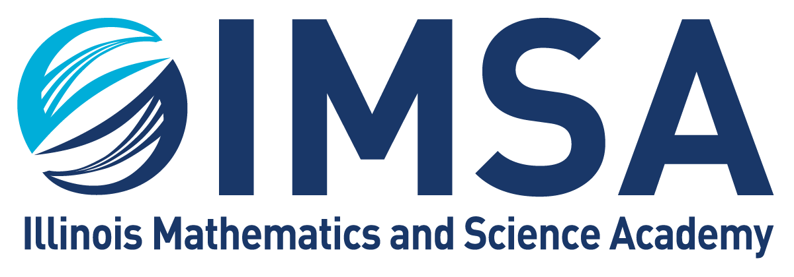

EDUCATION


I am currently an undergraduate at Carnegie Mellon University's School of Computer Science majoring in Computer Science with a minor in Computational Finance. The courses I am enrolled in surround computer systems, programming, theoretical computer science, mathematics applicable to computer science, and mathematical finance. Future courses will dive into artificial intelligence, algorithms, and security.
Graduated high school in 3 years, taking classes on linear algebra, multivariable calculus, computational science, and machine learning. I was my grade's representative on Student Council, captain of the debate team, and head of our food service committee. I qualified for the national debate tournament, AIME, and received 1st in the state on the American Computer Science League tournament. Finally, I scored a 1590/1600 on the SAT exam and was both a National Merit Scholar and AP Scholar with Distinction.

I have been a researcher at Northwestern University's Feinberg School of Medicine under Dr. Claus Peter Richter for over 2 years, leading 2 projects. The first was inducted into the Association for Research in Otylaryngology's National Conference while the other was selected for the Annual Biomedical Research Conference for Minority Students, winning the largest monetary prize of $200. Click here to read more about my research.